7
Ревью иллюстрации для статьи в блог dodopizzastory.com
Очень сочная иллюстрация. Уравновешенные композиционные пятна, центральное расположение фигуры отлично поддерживают общую симметриюна на сайте. Присутствует сюжет и атмосферность.
Но так же присутсвуют моменты, которые можно улучшить.
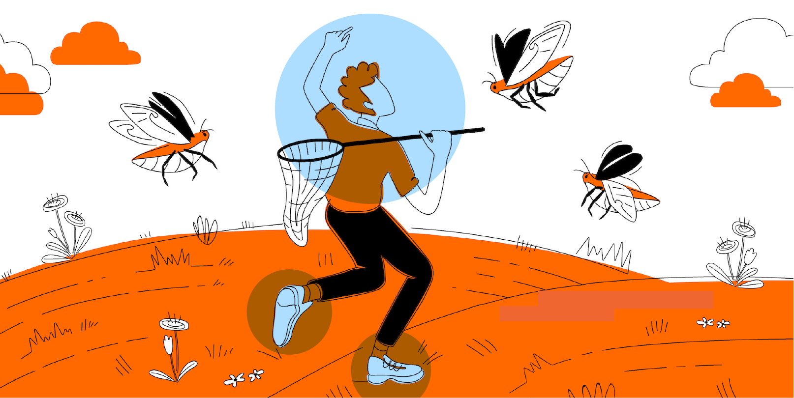
Анатомия парня забавная, но отстающая от требований стиля. Поза напоминает пиццера, подкидывающего тесто. Не хватает изображения лица.
Ботинки требуют доработки.
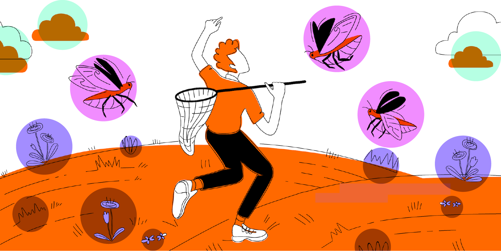
Основные объекты композиции разбиты на тройки равного веса, можно внести чуть больше разнообразия.
А вот стилистического единства не достает: облака слишком геометричные, жуки шумные и агрессивные, растения инфантильные и излише проработанные.
Рисуем скетчи позы парня.
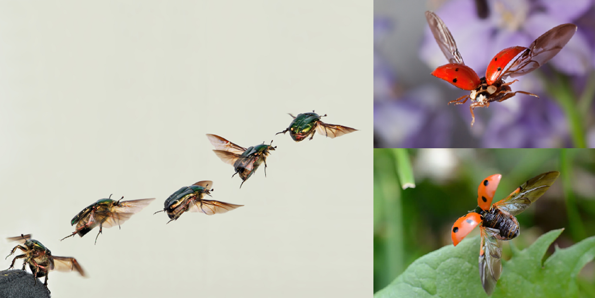
Ищем рефы менее агрессивных жуков. Этот пункт чистая вкусовщина, но ради эксперимента попробуем таракашек заменить на божьих коровок.
Создаем черновой скетч, используем новую позу и образ жуков.
Стараемся добиться консистентности.
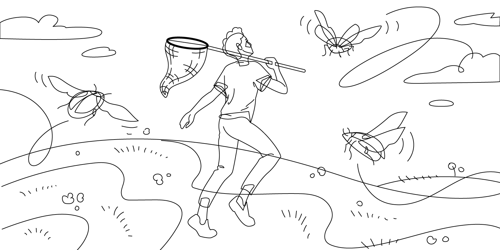
Отрисовываем основные шейпы.
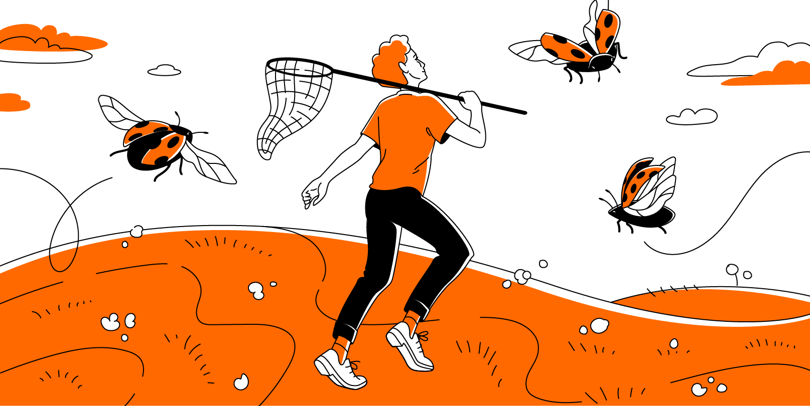
Добавляем цвет, детали и блики.
Основной сюжет, объекты и их расположение оставили практически нетронутыми. Изменили позу и анатомию парня, дорисовали ему лицо, отрисовали объекты в едином стиле, немного исправили блики, убрали лишние детали.
Вуаля! Новая версия иллюстрации готова.
6
Ревью иллюстрации для страницы «Тайный покупатель». Поиск стиля.
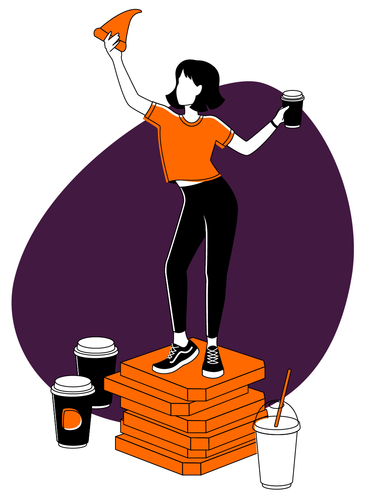
Иллюстрация устарела и отстала от стиля. В этой версии ещё не было лиц, поэтому она хуже передаёт эмоции. Одежда топорная, пицца пластиковая, всей картинке не хватает детализации.
Обновляем картинку в соответсвии со стилем из брендбука.
Добавляем лицо, исправляем фасоны одежды и причёску, перерисовываем пиццу, правим блики, добавляем детали.
В качестве эксперимента пробуем нарисовать этот сюжет в совершенно других стилях.
Начинаем с создания скетчей. Тестируем различные пропорции фигуры и лица, одежду, разные уровни детализации персонажа и объектов вокруг.
Сохраняем характер, стараемся максимально передать эмоции пластикой тела и выражением лица.
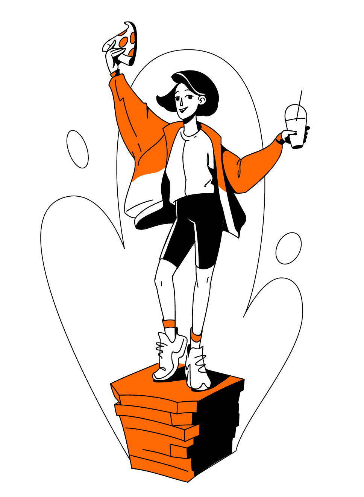
Выбираем один из скетчей.
Отрисовываем новую версию в другой стилистике.
Эта версия белее живая. Лайн свободный, одежда расслабленная, причёска гривая, лицо более выразтельное за счёт усиленной стилизации.
Эксперименты с палитрой в слайдере.
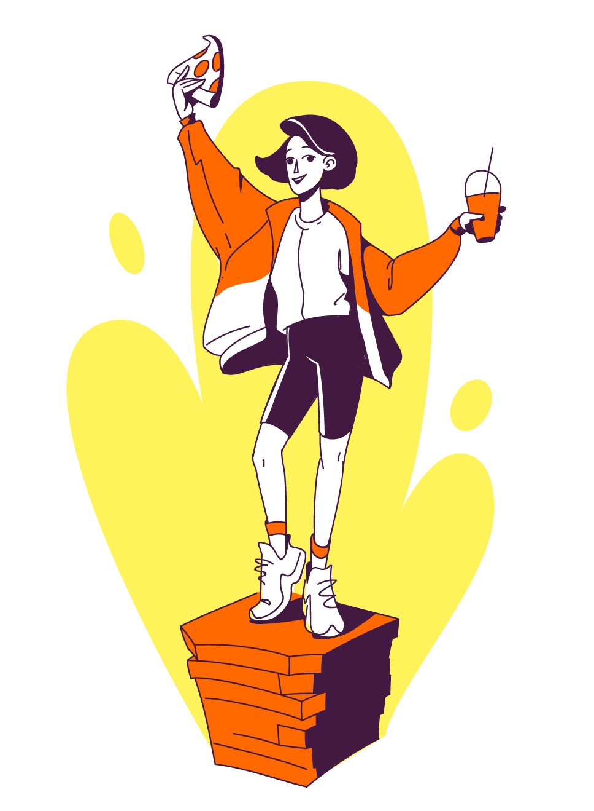
Выбираем один из скетчей.
Отрисовываем новую версию в другой стилистике.
Эта версия белее живая. Лайн свободный, одежда расслабленная, причёска гривая, лицо более выразтельное за счёт усиленной стилизации.
Эксперименты с палитрой в слайдере.
Выбираем один из скетчей.
Отрисовываем новую версию в другой стилистике.
Эта версия белее живая. Лайн свободный, одежда расслабленная, причёска гривая, лицо более выразтельное за счёт усиленной стилизации.
Эксперименты с палитрой в слайдере.
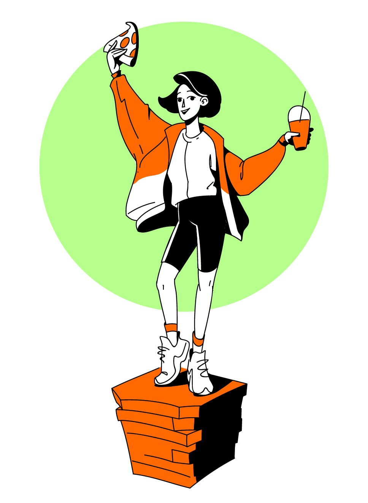
Выбираем один из скетчей.
Отрисовываем новую версию в другой стилистике.
Эта версия белее живая. Лайн свободный, одежда расслабленная, причёска гривая, лицо более выразтельное за счёт усиленной стилизации.
Эксперименты с палитрой в слайдере.
Продолжаем эксперимент. Используем другой скетч.
Данная версия более стилизованная. Пропорции сильно искажены, крупная голова акцентирует внимание на эмоции, лицо «диснеевское». Предметы упрощённые.
Цветовое решение немного экстремальное, используем голубой цвет кожи.
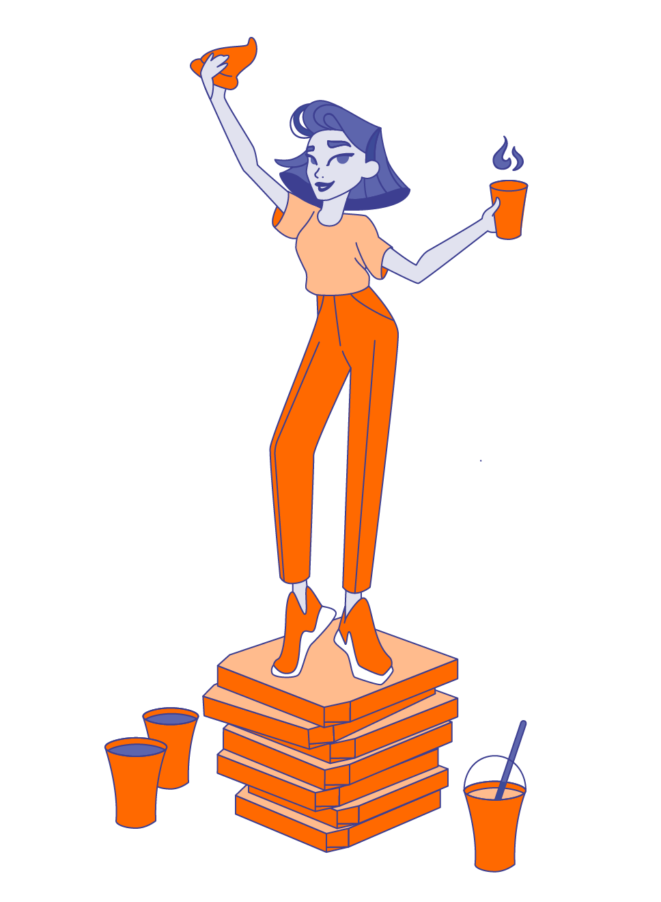
Отрисовываем третий скетч.
Стилизия пропорций и форм в этой версии максимально далека от реализма. Предметы упрощённые. Графические приёмы усложненные: градиенты, текстуры, тени.
Цвета классические с добавлением оттенков.
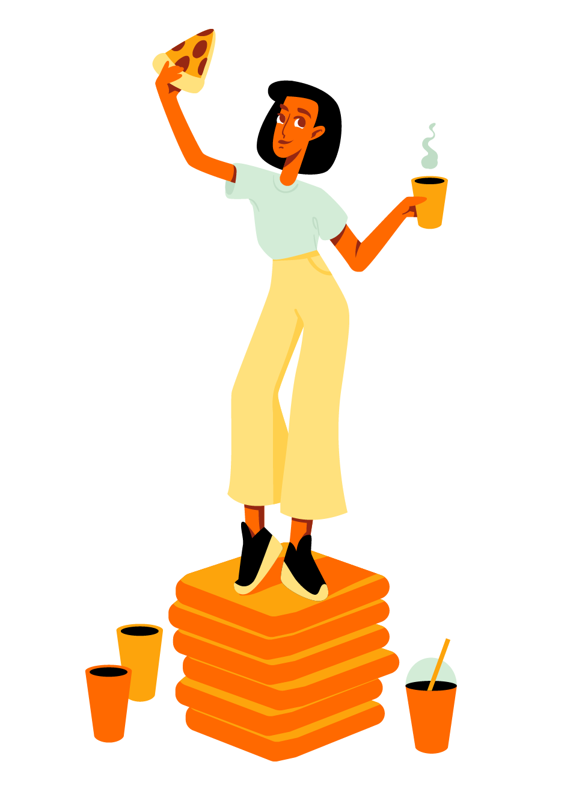
Четвертый вариант.
Формы скруглённые. Цвета аппетитные: оранжевая кожа додо-цвета и пастельное окружение. От использования контуров отказываемся, добавляем объема тенями.
В пятом примере уходим в азиатскую стилизацию.
Пропорции человека мультяшные, голова крупная, лицо «детское» приветливое, глаза большие. Цвета лёгкие и сочные.
Пробуем вариант с полупрозрачными цветными контурами и заливками.
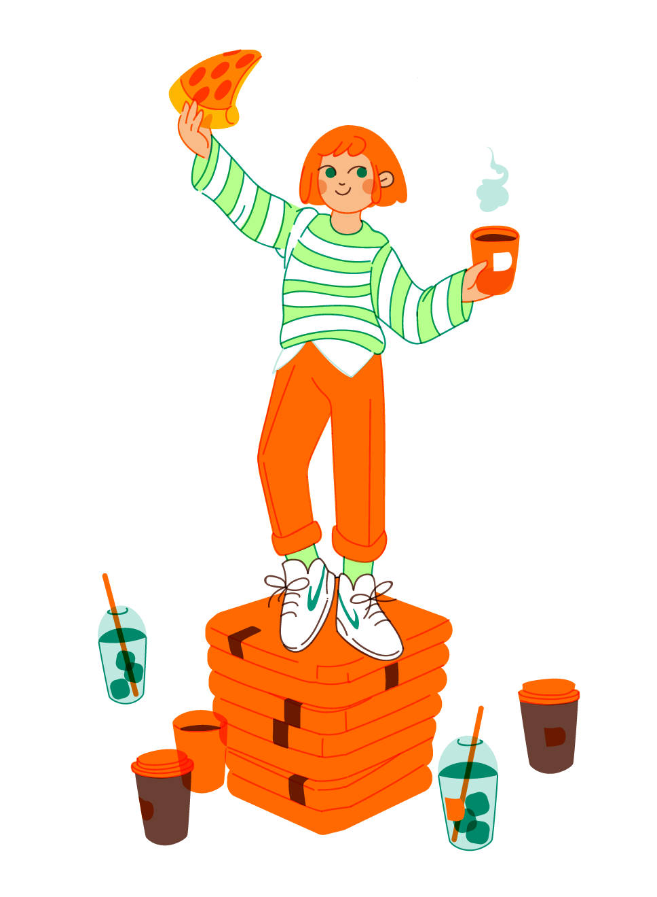
В пятом примере уходим в азиатскую стилизацию.
Пропорции человека мультяшные, голова крупная, лицо «детское» приветливое, глаза большие. Цвета лёгкие и сочные.
Пробуем вариант с полупрозрачными цветными контурами и заливками.
5
Ревью иллюстрации для страницы приложения «Оцените заказ».
Иллюстрация эмоциональная, сюжет отлично передает смысл. Персонажи интересные и харизматичные. Выбраны динамичные нескучные позы.
Проверим на соответсвие стилю и разберём ошибки в исполнении.
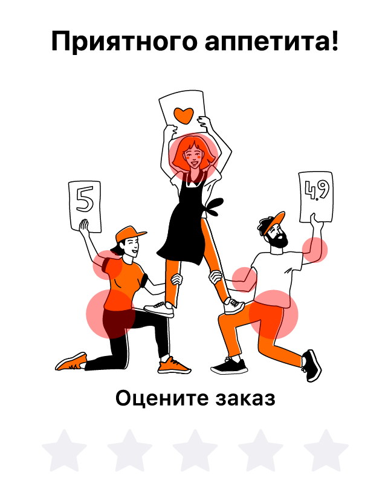
Позы нижних героев неестественные. Заметны неправдоподобные положения ног и наклоны торсов. Голова центрального персонажа слишком крупная. Толщины рук не согласованы. Есть непонятные участки: поворот плеча, сгибы локтей и положение ног.
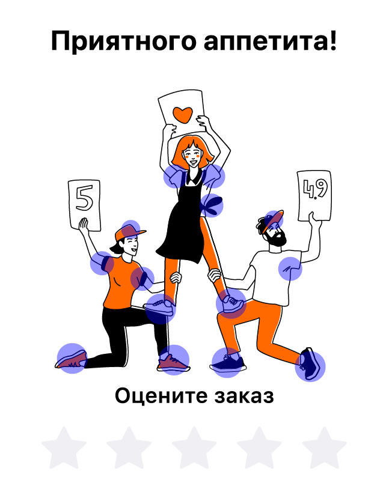
Кроссовки у всех героев одинаковой модели, это скучно. В некоторых местах на обуви слшком угловатые линии. Одежда выглядит неестественно, линии и формы не передают свойства ткани. Кепка и козырёк требуют доработки.
Ладони героев имеют разную степень детализации. Позиции рук и пальцев скучные, топорные.
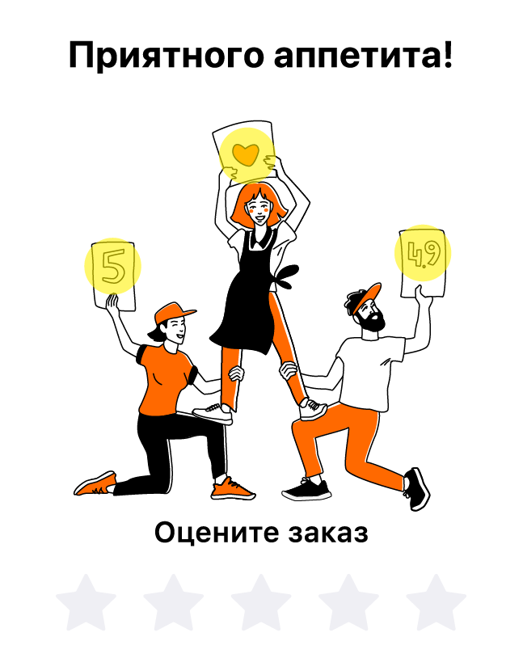
Таблички выглядят грубо, выбиваются из стилистики.
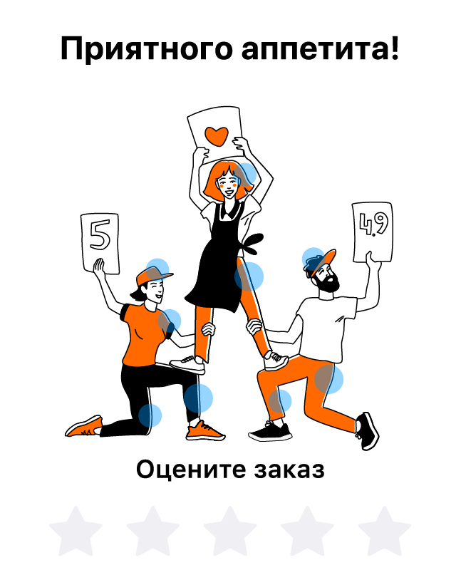
Сдвиги заливок/блики не подчиняются общему правилу. Есть участки с полным остсутствием этого приёма.
Сначала отрисовывем картинку в лайне.
Правим позы, пропорции и анатомию.
Лица и таблички делаем в общем стиле: сглаженными и аккуратными.
Прорабатываем причёски, одежду и обувь, синхронизируем детализацию.
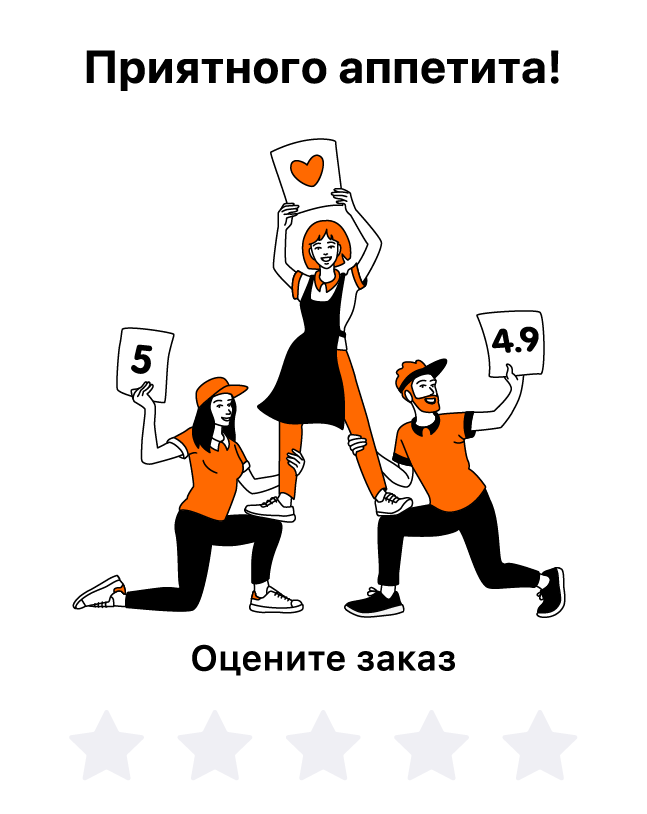
Добавляем заливки. Уравновешиваем композицию цветовыми пятнами.
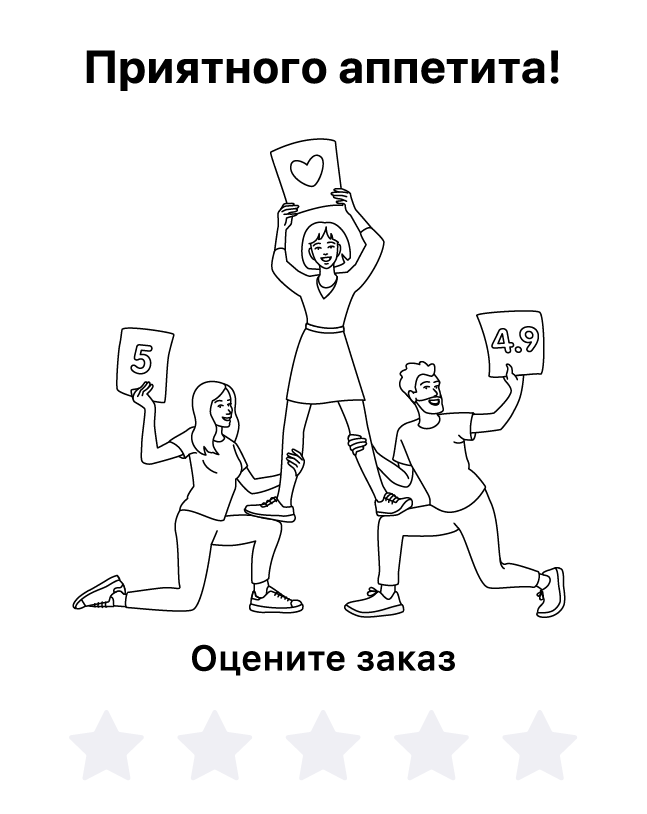
Превращаем геров иллюстрации из сотрудников в гостей. Так будет логичнее, оценивают заказ именно гости.
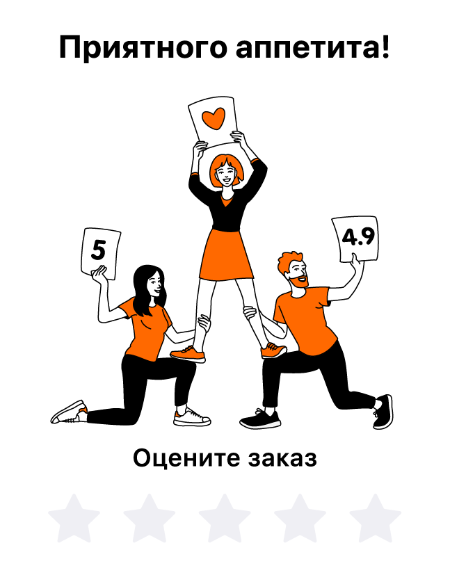
Добавляем заливки. Уравновешиваем композицию цветовыми пятнами.
Прорисовываем детали, добавляем блики и немного магии!
4
Ревью иллюстраций для почтовой рассылки «Заполняйте свой профиль и получайте подарки!».
Поиск стиля для рассылок.
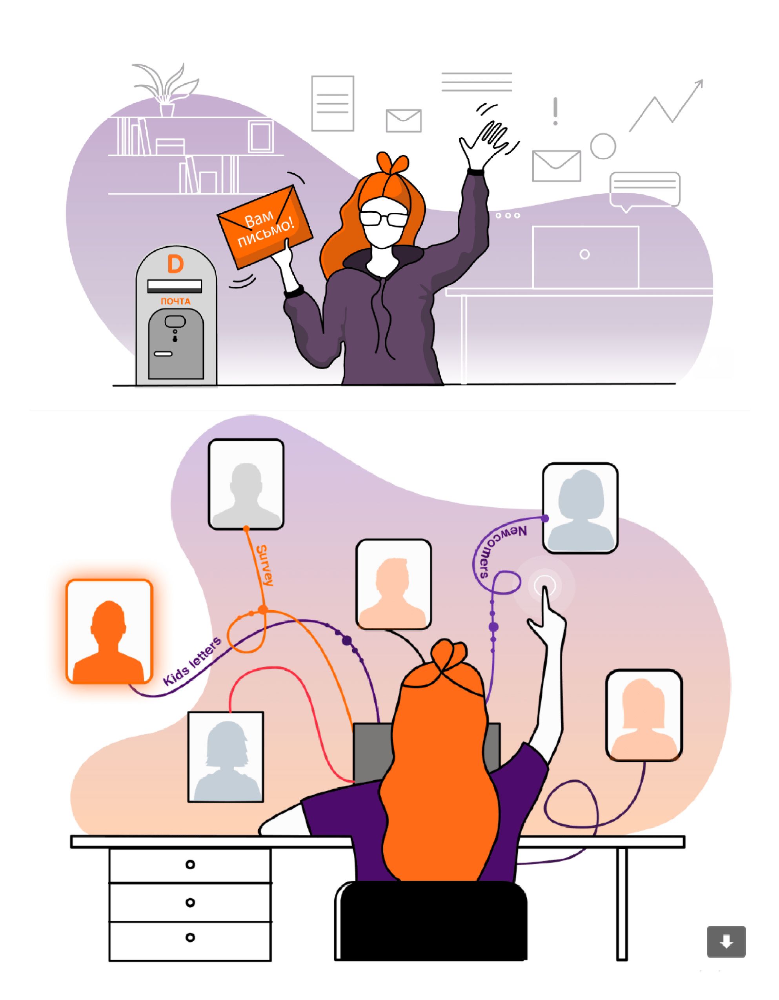
Сюжет очень точно передает содержание письма.
В этой иллюстрации появились новые приёмы: цветной лайн, градиенты, дополнительные цвета, свечение. Эффекты интересные, но их необходимо систематизировать и согласовать между собой.
Контурные картинки на фоне шумят и противоречат друг другу: полки реалистично расположены на стене, предметы абстрактно летают над столом.
Иллюстрации используются в одном письме, но выглядят по-разному. Тени, градиенты, проработка — отличаются. Девушка на второй картинке переодевается, для целостности сюжета лучше сохранить единый образ персонажа.
Текст внутри иллюстраций мешает, шумит и разрушает стилистику, от него лучше отказаться. Хорошая иллюстрация передаст смысл без дополнительных пояснений.
Аватарки аккаунтов не имеют единого стиля: прямоугольники с различным радиусом скругления, вес силуэтов различный.
Почтовый ящик на первой картинке не нужен.
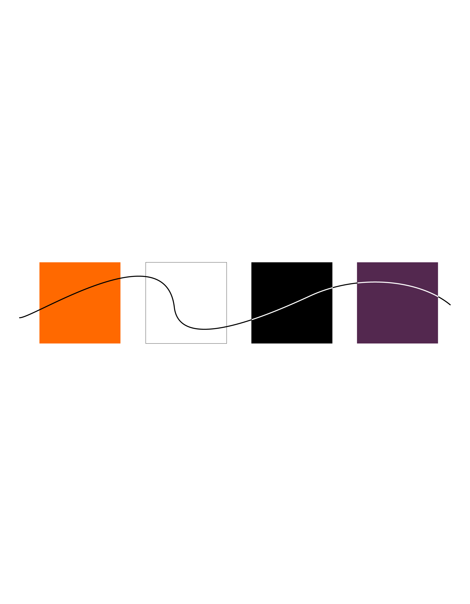
Используем классический набор цветов и приёмов для иллюстраций.
Перерисовываем картинки в нашем стиле.
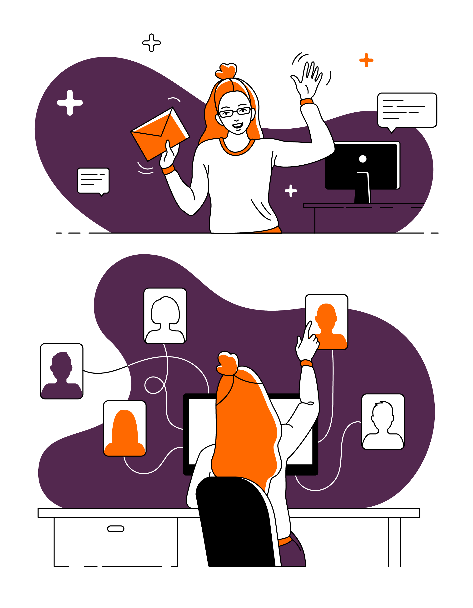
Отрисовываем девушку с учетом требований стиля.
Добавляем лицо.
Одежду красим в одинаковые цвета, используем одинаковые приёмы.
Фоновые изображения в сером лайне — упрощаем. Избавляемся от ощущения клипартовской подборки. Заполняем пространство мелкими абстрактными деталями, создаем ощущение волшебства.
Убираем почтовый ящик.
Убираем надписи из иллюстраций.
Отрисовываем аватарки в едином ключе.
Отказваемся от цветного лайна
Используем заливку фиолетового цвета вместо градиента в обеих иллюстрациях.
Теперь иллюстрации соответствуют общей стилистике, но их нужно подстроить под использование в рассылке.
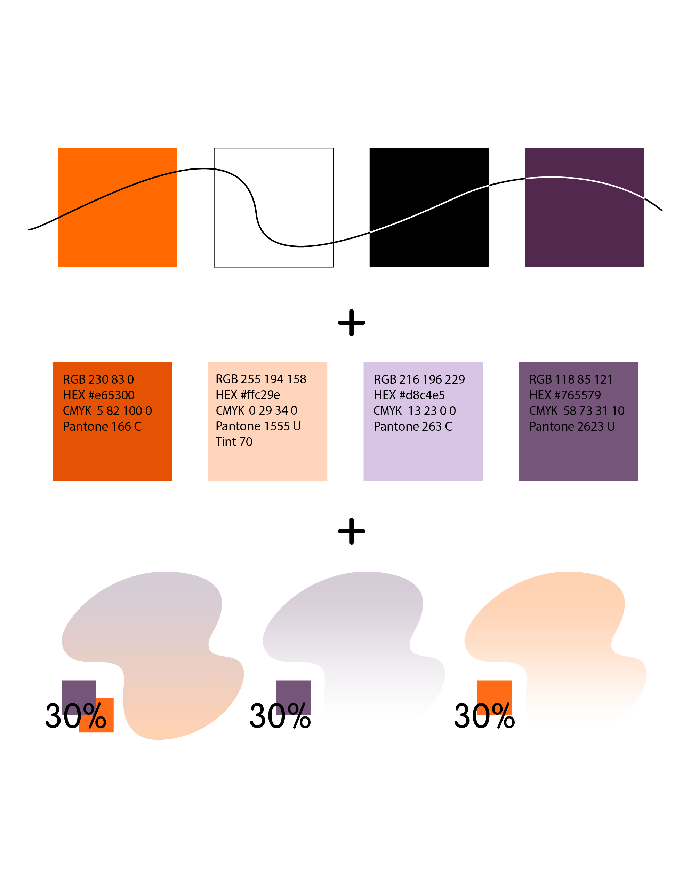
Используем основные цвета, добавляем к ним полутона и три вида градиентов.
Лайн оставляем двух видов: черный и белый.
Отказываемся от использования серого цвета и эффектов свечения.
Пробуем применить интересные приёмы из исходной иллюстрации.
Учитываем специфику создания почтовых рассылок: картинки требуется создавать быстро и на потоке, требуется генерировать интересные и ёмкие визуализации, стиль должен быть узнаваемым и должен ассоциироваться с Додо Пиццей.
Ускоряем процесс создания рисунков.
Анатомию персонажа упрощаем, снижаем детализацию одежды.
Отказываемся от использования лиц.
Убираем прорисовку заднего плана, антураж комнаты заменяем на абстрактные летающие объекты.
Вместо тяжёлых заливок возвращаем градиенты.
!Не уходим в реализм и не стилизуем слишком сильно.
Теперь можно повышать уровень детализации. В первую очередь за счет проработки персонажа и основного сюжета.
Возвращаем лицо, добавляем тени на одежду и причёску.
!Не усложняем задний план.
!Не добавляем сложные объекты в композицию.
!Не тратим время на проработку сложных задних планов. Отдаем предпочтение простым абстрактным фонам и заполняющим объектам.
Рисуем чистые простые иллюстрации, концентрируем внимание на персонажах.
Тени добавляем в последнюю очередь.
Соблюдаем пропорции и, в упрощённом виде, анатомию и перспективу.
Продолжаем экспериментировать, но осторожно ;)
3
Ревью иллюстрации для почтовой рассылки «Письмо от Томы: дети в Додо».
Картинка яркая, изображает позитивные эмоции, цвета отлично подобраны под детскую тематику, присутствует свежая идея — Додо-промоутер в качестве персонажа.
Но к исполнению есть вопросы.
Соберём набор референсов. Нам пригодятся: мужская фигура, летняя одежда, кроссовки, костюм Додоши.
Пропорции человека не подчиняются общему стилю Додо. Мы используем классическую пропорцию соотношения головы к телу — примерно 1/7,5. На рисунке мы видим соотношение 1/5,5. Это больше похоже на детскую фигуру, но рост мы видим совсем не детский. Заменим персонажа на человека среднего роста. Используем пропорцию в стиле Додо: за основу возьмем классическую, чуть удлиним конечности относительно торса и увеличим кисти рук.
Смещение заливок невнятное, не подчиняется общему правилу, не показывает направление света в композиции, не добавляет объема.
Голова Додо плоская, скопированная из логотипа. Добавим естественный поворот и объем. Мордочку нарисуем как на костюме промоутера.
Голова Додо плоская, скопированная из логотипа. Добавим естественный поворот и объем. Мордочку нарисуем как на костюме промоутера.
Поворот головы парня выглядит неестественно. Лучше показать взаимодействие персонажей, повернув голову в сторону Додоши.
Прическа неряшливая, ломает анатомию головы. Используем простую, понятную, стильную стрижку. Подчеркнем форму и поворот головы.
Есть проблемы с анатомией в зоне шеи. Ухо надо подправить. Ручка слишком худенькая.
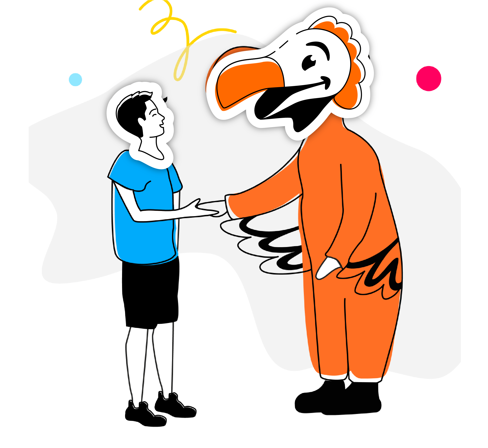
Поворот головы парня выглядит неестественно. Лучше показать взаимодействие персонажей, повернув голову в сторону Додоши.
Прическа неряшливая, ломает анатомию головы. Используем простую, понятную, стильную стрижку. Подчеркнем форму и поворот головы.
Есть проблемы с анатомией в зоне шеи. Ухо надо подправить. Ручка слишком худенькая.
Кисти рук похожи на варежки, не хватает проработки, из-за этого плохо считываются движения. Не понятно, персонажи здороваются или передают друг другу мелкий предмет, дают пять или Додо протягивает руку для поцелуя? Используем не типичный, но понятный жест дружеского приветствия/прощания — соприкосновение кулаками.
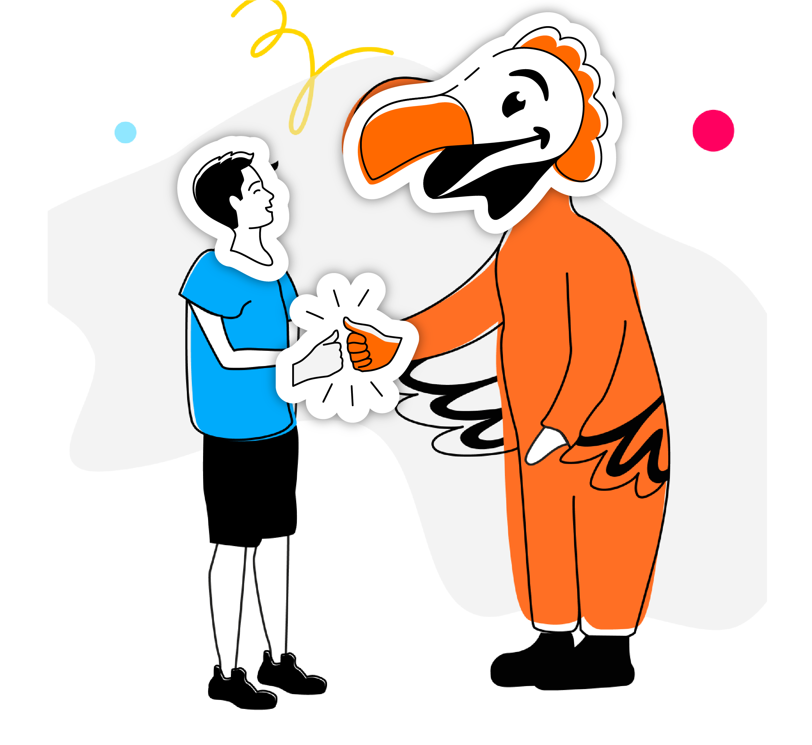
Кисти рук похожи на варежки, не хватает проработки, из-за этого плохо считываются движения. Не понятно, персонажи здороваются или передают друг другу мелкий предмет, дают пять или Додо протягивает руку для поцелуя? Используем не типичный, но понятный жест дружеского приветствия/прощания — соприкосновение кулаками.
Вторая ладонь Додо похожа на плавник. В реальном костюме предусмотрены оранжевые перчатки, используем их в иллюстрации и прорисуем пальцы.
Вторая ладонь Додо похожа на плавник. В реальном костюме предусмотрены оранжевые перчатки, используем их в иллюстрации и прорисуем пальцы.
Ботинки у Додоши громоздкие, странной формы, правый не отличается от левого. Рисуем ботинки, как в реальном костюме. Учитываем перспективу.
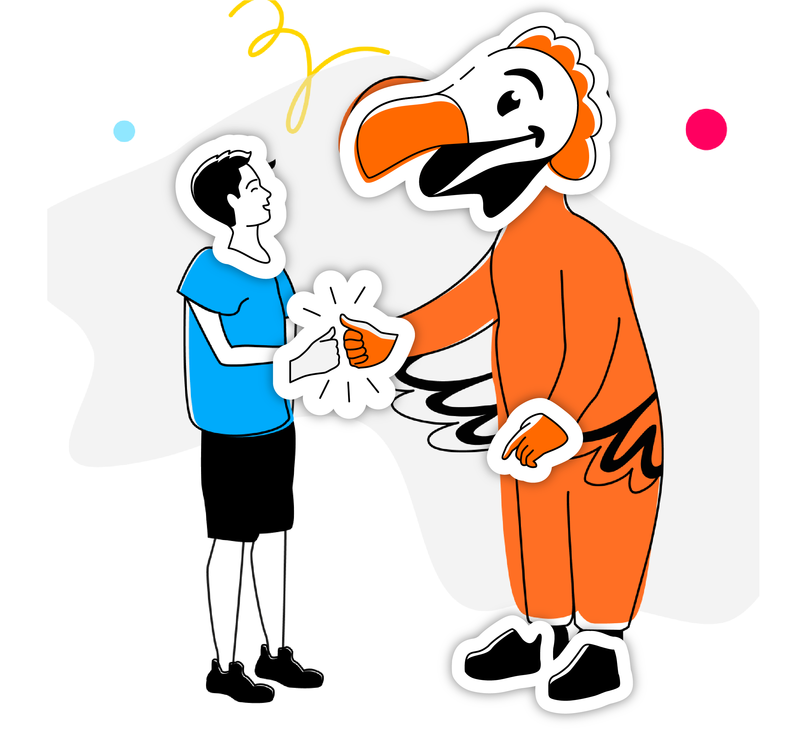
Ботинки у Додоши громоздкие, странной формы, правый не отличается от левого. Рисуем ботинки, как в реальном костюме. Учитываем перспективу.
Ботики у парня будто бы из прошлого. Форма старомодная, правый не отличается от левого. Рисуем стильные кроссовки, учитываем постановку ног и перспективу.
Ботики у парня будто бы из прошлого. Форма старомодная, правый не отличается от левого. Рисуем стильные кроссовки, учитываем постановку ног и перспективу.
Явно заметны отклонения в анатомии плеча, есть ощущение двойного сустава. Положение руки исправим, отрисуем рукав по форме.
Одежда искажает пропорции тела,в силуэтах нет стиля. Рисуем футболку и шорты простого кроя, хорошо сидящие по фигуре.
Явно заметны отклонения в анатомии плеча, есть ощущение двойного сустава. Положение руки исправим, отрисуем рукав по форме.
Одежда искажает пропорции тела,в силуэтах нет стиля. Рисуем футболку и шорты простого кроя, хорошо сидящие по фигуре.
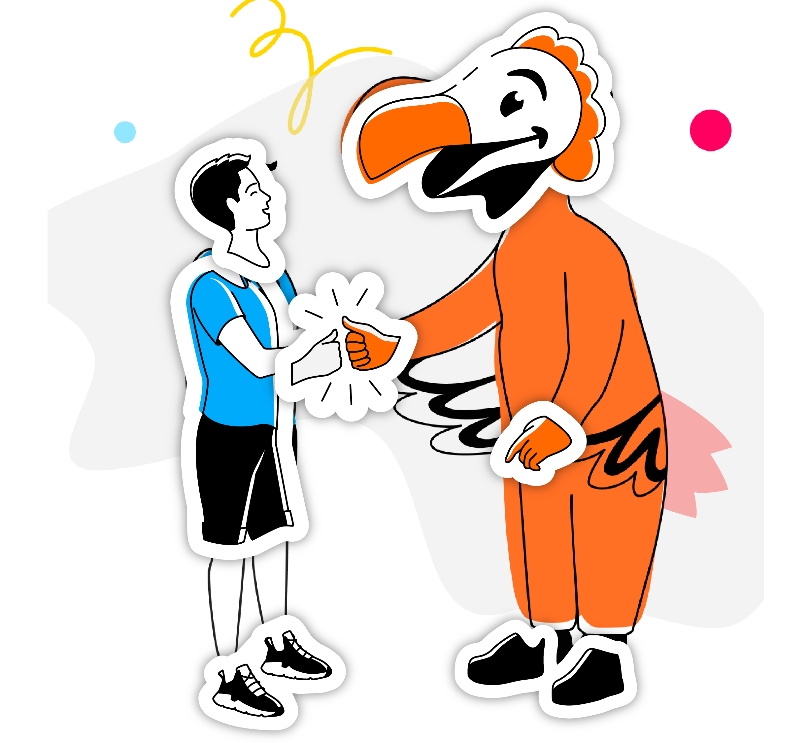
На костюме Додоши должен быть хвост. Добавим его на иллюстрацию.
Проработаем сдвиг заливок, с учетом падения света справа сверху.
После всех исправлений получаем обновленную картинку.
2
Процесс создания картинки для экрана выбора страны.
1
Как мы рисовали иллюстрацию для приложения Додо.
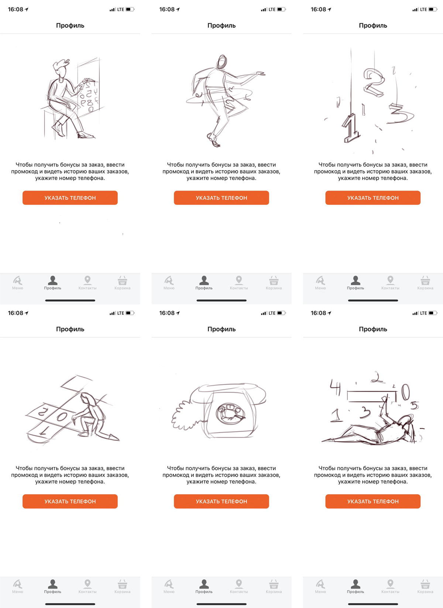
Подготовили наброски с идеями.
Выбрали понятный, но слегка волшебный сюжет. Парень лежит в расслабленной позе и вбивает номер телефона в абстрактное поле ввода.
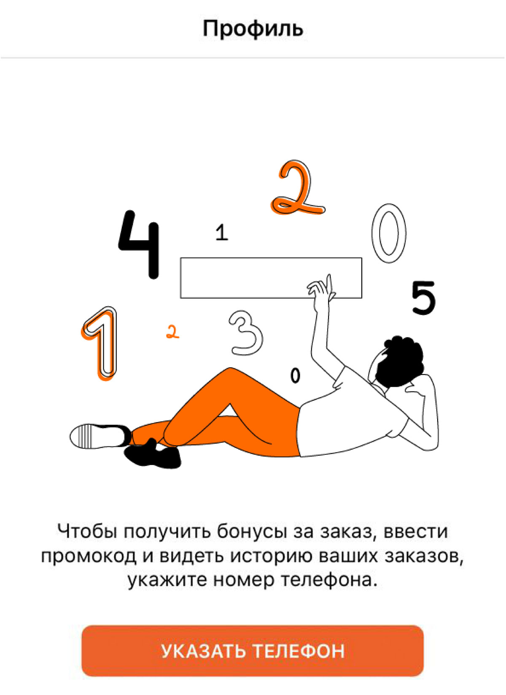
По эскизу нарисовали общие формы, добавили цвет.
Цифры получились школьными. Парню необходим стилист и барбер. С руками что-то не то. Поле ввода только мешает.
Цифры сделали строже и футуристичнее. Парню изменили прическу, одели помоднее. Проверили и исправили анатомию рук. Поле ввода убрали, оставили абстрактный набор летающих цифр.
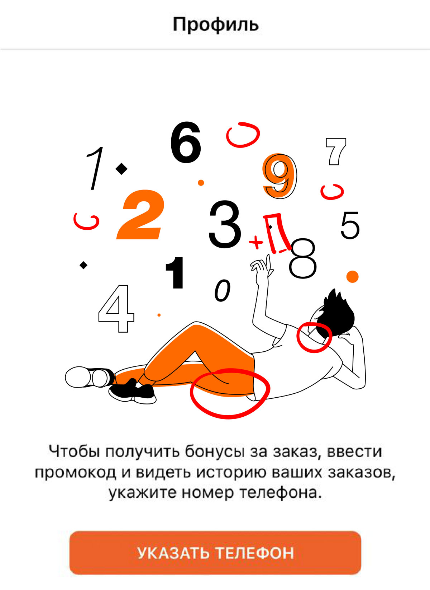
Решили, что в руке не хватает смартфона. Цифры захотели уплотнить. Все еще остались вопросы к анатомии.
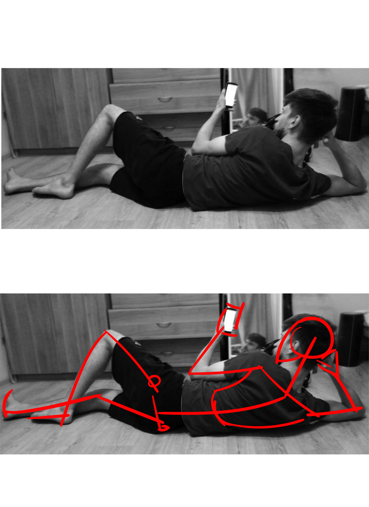
Сделали фотографию для уточнения позы. Нарисовали набросок по фото.
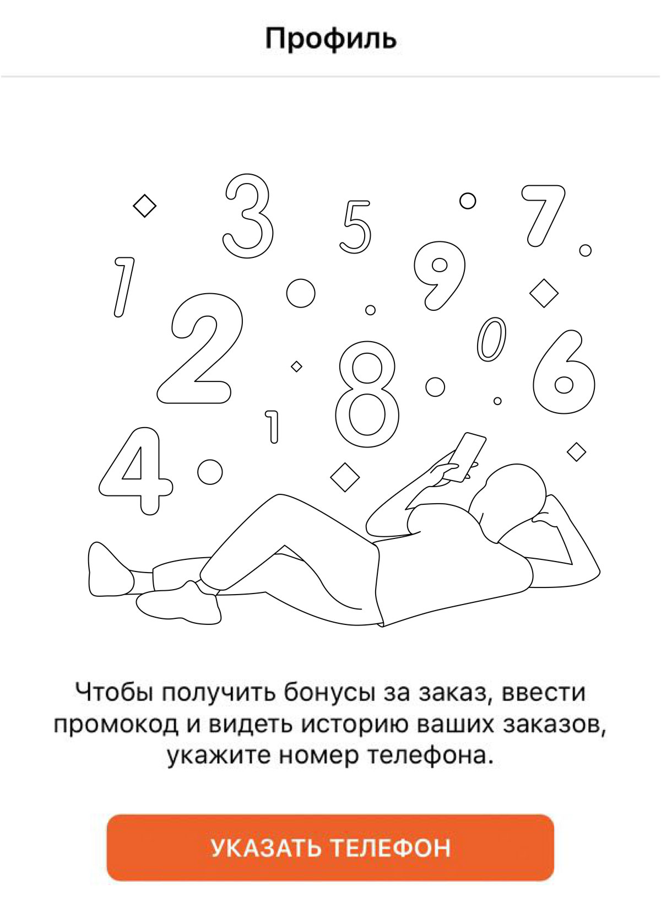
Обвели наш новый скелет. Добавили одежду и прическу. Цифры уплотнили.
Пропорции тела немного вытянули, добавили цвет и детали.
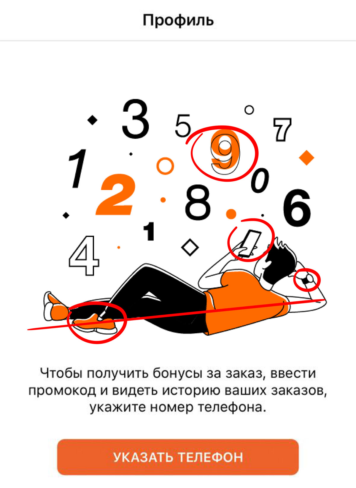
Композиция получилась несбалансированной, исправить поворотом всего рисунка — не удаось. Сделали коррекцию позы: ноги подняли выше, изменили угол сгиба в спине. Часы убрали.
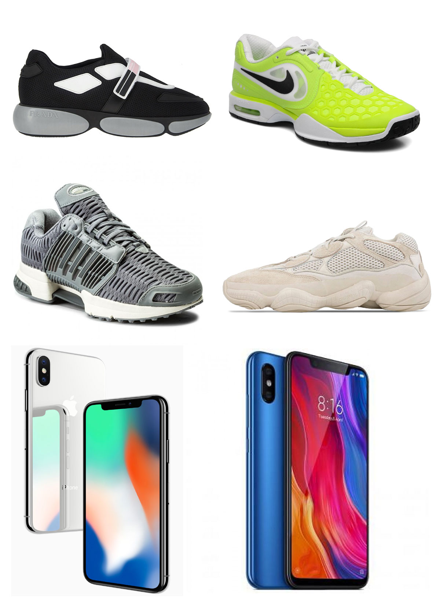
Нашли референсы телефона и кроссовок.
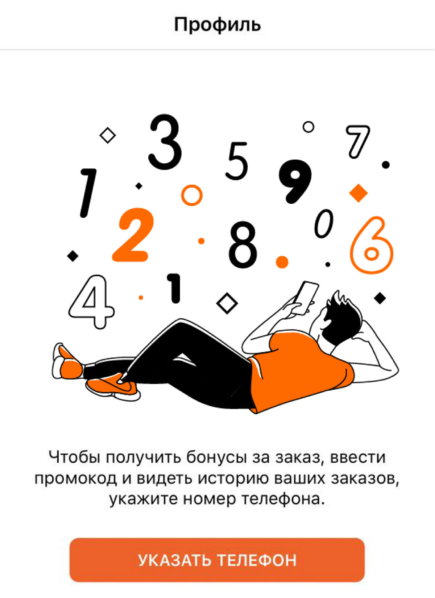
Исправили форму обуви и смартфона. Рисунок уравновесили. Осталась пара моментов для коррекции.
Передняя нога потерялась на фоне задней, щиколотка кажется слишком тонкой. Контур композиции нечеткий.
Расставили цифры, привели композицию к прямоугольной форме. Обозначили щиколотку ближней ноги, добавили блик на штанину. Решили, что главное вовремя остановиться и забрали эту версию.